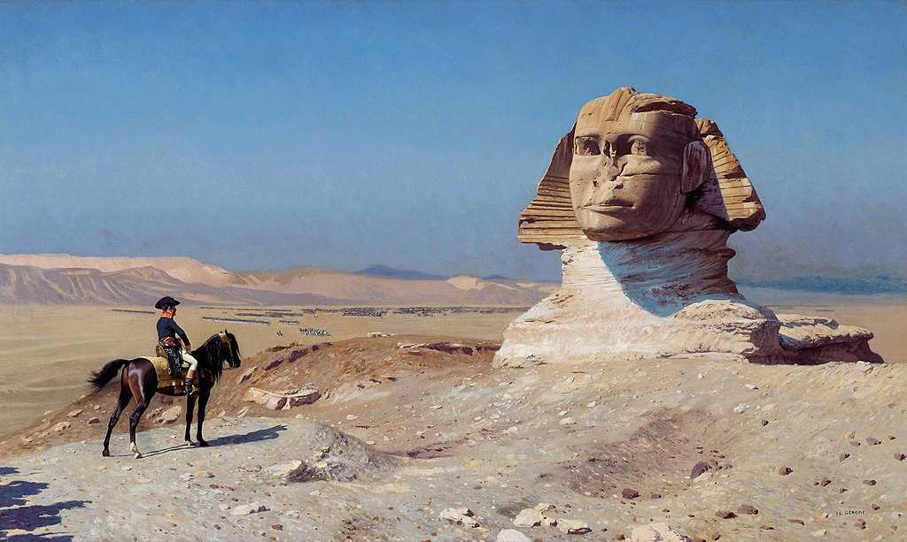

<head>
<meta charset="UTF-8" />
<meta name="keywords" content="drawing, painting" />
<meta name="description" content="drawings by Sunjy" />
<title>Sunjy</title>
<link rel="shortcut icon" type="image/x-icon" href="../../mImages/mCommon/favicon.ico" media="screen" />
<link rel="stylesheet" type="text/css" href="../../mCsses/mCommon/mCssA.css" />
<link rel="stylesheet" type="text/css" href="../../mCsses/mCommon/mCssB.css" />
<link rel="stylesheet" type="text/css" href="../../mCsses/mCommon/mCssC.css" />
<link rel="stylesheet" type="text/css" href="../../mCsses/mCommon/mCssD.css" />
<link rel="stylesheet" type="text/css" href="../../mCsses/mContent/mCssA.css" />
<link rel="stylesheet" type="text/css" href="../../mCsses/mContent/mCssB.css" />
<link rel="stylesheet" type="text/css" href="../../mCsses/mContent/mCssC.css" />
<link rel="stylesheet" type="text/css" href="../../mCsses/mContent/mCssD.css" />
</head>
<script type="text/javascript" src="../../mScripts/mContent/mContentAA.js" /></script>
<script type="text/javascript" src="../../mScripts/mContent/mContentAB.js" /></script>
<script type="text/javascript" src="../../mScripts/mContent/mContentAC.js" /></script>
<script type="text/javascript" src="../../mScripts/mContent/mContentAD.js" /></script>
<script type="text/javascript"></script> 
<script type="text/javascript">
document.write('<div class="mImgAbsolute"></div>');
/*
document.write('<p class="mFontSizeBColor" />From a white paper...</p>');
document.write('<table class="center"><tr><td>');
document.write('');
document.write('</td></tr></table>');
*/
</script>


<script type="text/javascript">
document.write('<p class="mFontSizeBColor" />Bonaparte Before the Sphinx</p>');
document.write('<p class="mFontSizeSColor" />By Jean-Leon Gerome, depicts Napoleon Bonaparte during his Egyptian campaign, positioned on horseback in front of the Great Sphinx of Giza, with his army in the background.<br><br>The painting popularized Napoleon in front of the Sphinx as a subject in art and caricature.<br><br>When the painting was first presented at the Salon of 1886, it had the title Oedipus, evoking the myth of Oedipus and the Sphinx. Gérôme was referencing both the ancient myth and its depiction by previous artists.<br><br>The French campaign in Egypt and Syria (1798–1801) was Napoleon Bonaparte’s campaign in the Ottoman territories of Egypt and Syria.<br><br>Napoleon’s strategy was to defend French trade interests and to seek alliances to weaken Britain’s access to India. He also sought glory by walking in the footsteps of Alexander the Great.</p>');
document.write('<table class="center" /><tr><td>');
document.write('<br>The painting popularized Napoleon in front of the Sphinx as a subject in art and caricature.<br><br>When the painting was first presented at the Salon of 1886, it had the title Oedipus, evoking the myth of Oedipus and the Sphinx. Gérôme was referencing both the ancient myth and its depiction by previous artists.<br><br>The French campaign in Egypt and Syria (1798–1801) was Napoleon Bonaparte’s campaign in the Ottoman territories of Egypt and Syria.<br><br>Napoleon’s strategy was to defend French trade interests and to seek alliances to weaken Britain’s access to India. He also sought glory by walking in the footsteps of Alexander the Great." />');
document.write('</td></tr></table>');
</script>


